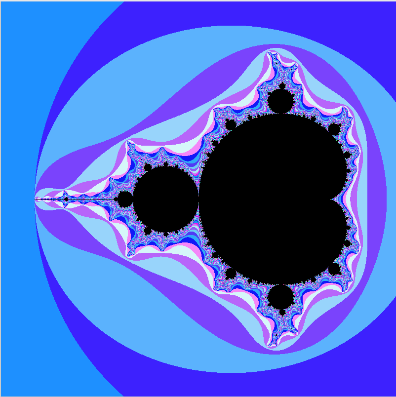
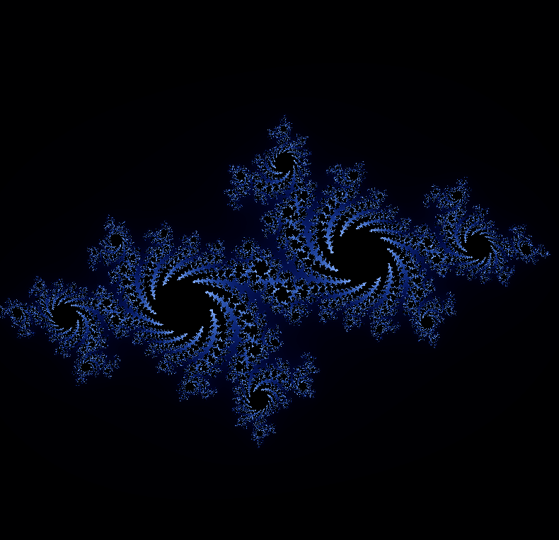

Coding Project — 42 School
fract-ol
A 2D fractal renderer that turns iterative math into an explorable image — real-time zoom into Mandelbrot and Julia sets. Passed with bonus.
The Problem
A formula isn't a picture
Mandelbrot and Julia sets are defined by a simple recursive formula, but turning that formula into something you can actually see — and zoom into, in real time — meant building the rendering, coloring, and interaction from scratch, with performance that holds up at any zoom depth.
The Build
Mapping every pixel to the complex plane
I wrote a 2D renderer in C using minilibX: each pixel maps to a point in the complex plane, is iterated through the fractal formula until it escapes or hits an iteration limit, then gets colored based on how quickly it escaped. Real-time zoom and pan let you explore the set at any depth.


The Result
Passed with bonus
An interactive fractal explorer with smooth real-time zoom and color mapping across both Mandelbrot and Julia sets — turning an abstract formula into something you can actually explore.